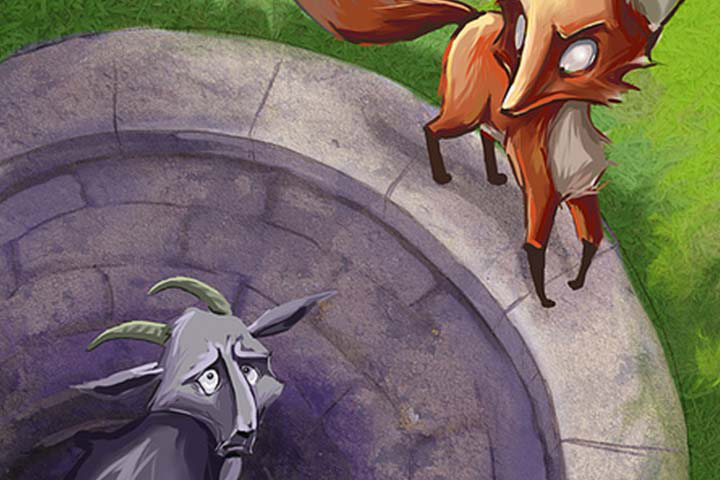

Story One
The Fox And The Goat
Walking alone in the forest, an unlucky fox falls into a well one day. Unable to get out, he waits for help. A passing goat sees the fox and asks him why he is in the well. The cunning fox responds, “there is going to be a great drought, and I am here to make sure I have water.” The gullible goat believes this and jumps into the well. The fox swiftly jumps on the goat and uses its horns to reach the top, leaving the goat in the well.
Moral: Never trust the advice of a man in difficulties.